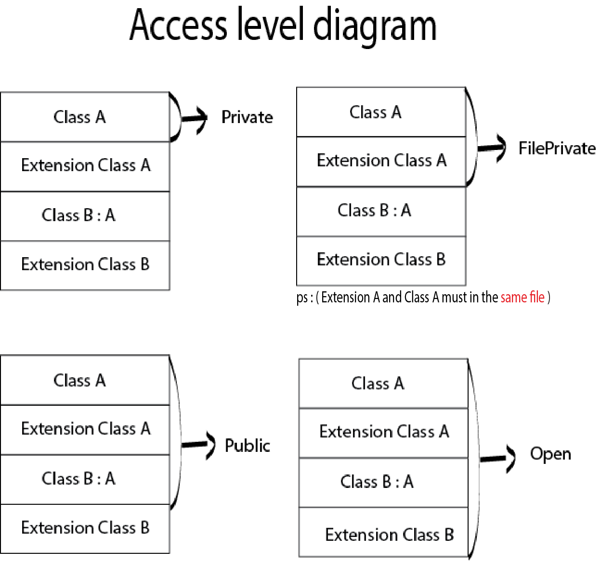

Swift 3 Access Control with diagram
Dec 21, 2016
A diagram for open, public, private, fileprivate access level

In words
open
- An open class is accessible and subclassable outside of the defining module. An open class member is accessible and overridable outside of the defining module.
public
- A public class is accessible but not subclassable outside of the defining module. A public class member is accessible but not overridable outside of the defining module.
private
- The private foo method is accessible only within the scope of the class A { … } definition. It is not even accessible from an extension to the type.
fileprivate
- The file-private bar method is accessible from the same source file.